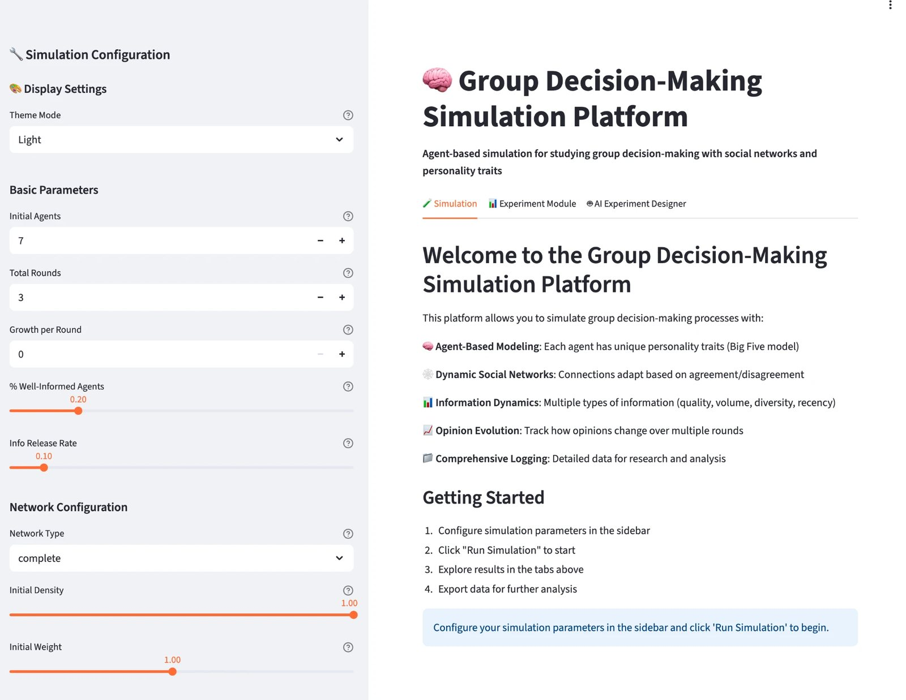
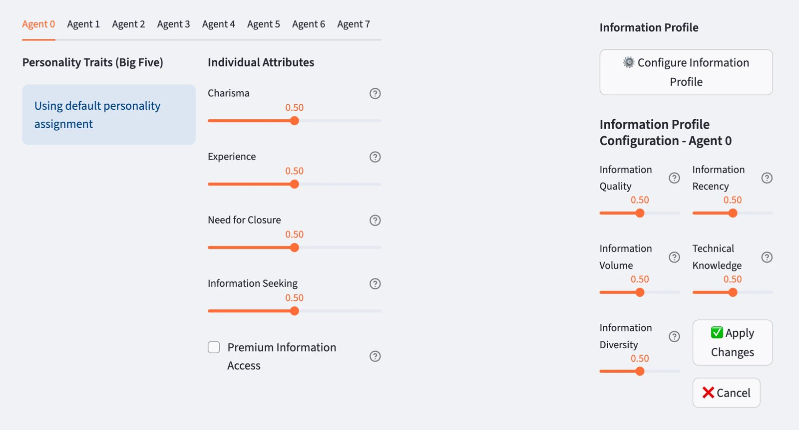
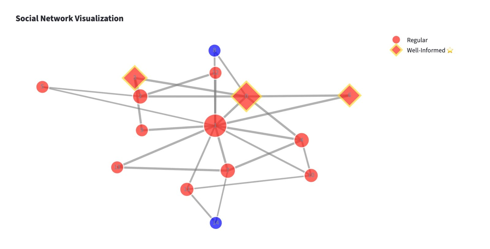
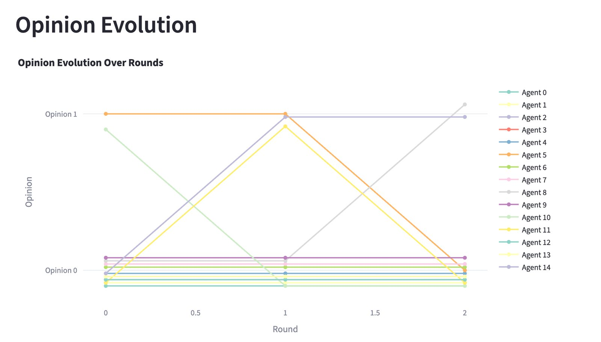
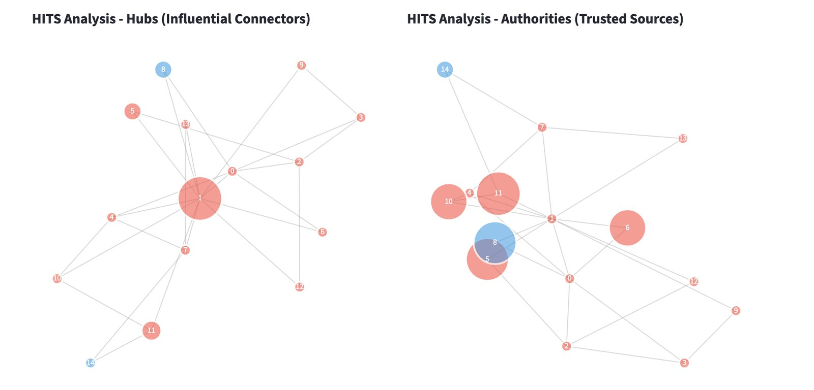
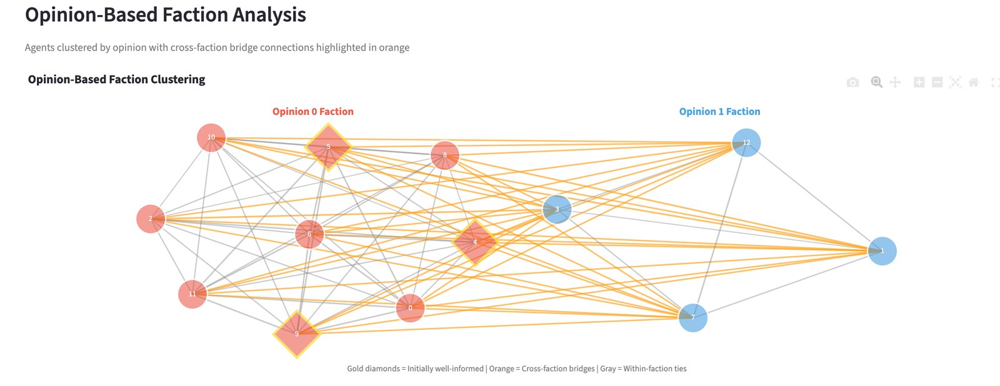

O projeto
Comitês, conselhos, equipes de projeto: boa parte das decisões nas organizações é tomada em grupo. Quem convence quem? Quanto pesa ter informação melhor que os colegas? A rede de relações ajuda o grupo a acertar ou só o faz concordar mais rápido? O GroupCognito é um laboratório virtual para essas perguntas.
Na plataforma, cada participante do grupo é um agente com personalidade própria (pelo modelo dos Big Five), carisma, experiência e um perfil de acesso à informação. Os agentes ficam ligados numa rede social, trocam opiniões ao longo de várias rodadas e mudam de ideia sob a influência dos outros. As ligações se fortalecem quando há concordância e enfraquecem quando há desacordo. O pesquisador define o tamanho do grupo, o tipo de rede, a parcela de agentes bem informados e o ritmo em que novas informações aparecem, e acompanha o resultado rodada a rodada.
Tudo pode ser ajustado. A rede pode ser completa, aleatória, de Erdős-Rényi, de Watts-Strogatz, de Barabási-Albert ou montada sob medida para imitar uma organização real ou fictícia. Cada agente pode ser configurado um a um: personalidade, carisma, experiência, necessidade de fechamento, busca por informação, acesso privilegiado à informação e um perfil de informação com qualidade, volume, diversidade, atualidade e conhecimento técnico.
Além da simulação individual, a plataforma roda experimentos em lote, com milhares de execuções e parâmetros variando de forma controlada, e já entrega a análise estatística dos resultados. E traz um designer de experimentos com inteligência artificial: o pesquisador descreve o que quer investigar, e a IA ajuda a definir as simulações e as executa. Tudo se faz pela interface, sem programar, mas quem preferir também pode usar a plataforma por código.
A ideia de partida é simples: a decisão de um grupo nasce do encontro entre a cognição de cada pessoa, seus traços de personalidade, a informação que cada uma tem e a estrutura social que as liga. Esses fatores costumam ser estudados separadamente, e faltam modelos que mostrem como eles interagem ao longo do tempo. Por isso o projeto junta três campos: Ciência da Informação, Análise de Redes Sociais e Estratégia Comportamental. A plataforma nasceu da parceria entre o Programa de Pós-Graduação em Administração e o Programa de Pós-Graduação em Ciência da Informação da Universidade de São Paulo (PPGCI-USP).
A plataforma foi apresentada como Produto Técnico-Tecnológico (PTT) no EnANPAD 2026, com o trabalho Plataforma de Simulação Baseada em Agentes para Apoio à Tomada de Decisão em Grupo (Agent-Based Simulation Platform for Analyzing Group Decision-Making Strategies), publicado nos anais da ANPAD. Esta página mostra essa versão estável. Uma nova versão já está em desenvolvimento.
Tomada de decisão
Simula como opiniões se formam, se espalham e convergem num grupo, e se a decisão final é a correta.
02Comportamento
Traços de personalidade, carisma e experiência mudam o quanto cada agente influencia e se deixa influenciar.
03Ferramenta de pesquisa
Testa cenários que seriam caros ou impossíveis de montar com grupos reais, em lote ou com ajuda de um designer de experimentos com IA.






Como funciona uma rodada
Antes da primeira rodada, a plataforma monta a rede e cria os agentes, com valores padrão, aleatórios ou definidos um a um. Depois, a cada rodada, repete o mesmo ciclo:
- Evidência informacional
Cada agente forma um juízo a partir da própria informação, medida por seis dimensões (qualidade, volume, diversidade, atualidade, conhecimento técnico e experiência). Elas são combinadas por média geométrica, de modo que uma dimensão muito fraca derruba o conjunto e não pode ser compensada pelas outras.
- Influência social
O agente olha para os vizinhos na rede. A opinião de cada um pesa conforme o carisma de quem fala e a força da ligação entre os dois.
- Atualização da opinião
A nova opinião combina a evidência, a influência social e a ancoragem na opinião anterior. A personalidade de cada agente define quanto pesa cada uma dessas partes.
- Registro e adaptação
Cada mudança de opinião é registrada como um evento de influência (quem convenceu quem), e as ligações da rede se fortalecem ou enfraquecem conforme a concordância.
- Crescimento do grupo
Se o pesquisador quiser, novos agentes entram no grupo a cada rodada.
Ao fim, a plataforma calcula consenso, acerto da decisão e métricas da rede, aplica PageRank e HITS ao histórico de influências e mostra tudo em mais de 15 gráficos interativos, prontos para exportar.
O que a plataforma faz
- A rede social
Redes completas, aleatórias, de Erdős-Rényi, de Watts-Strogatz, de Barabási-Albert ou personalizadas para imitar uma organização, com ligações que se ajustam conforme os agentes concordam ou discordam.
- Agentes sob medida
Cada agente pode ter personalidade, atributos e perfil de informação próprios, ou o grupo pode ser gerado com valores padrão ou aleatórios.
- A evolução das opiniões
Gráficos e tabelas com a opinião de cada agente por rodada, a formação de consenso e o fluxo de agentes entre as opiniões.
- O peso da informação
A comparação entre agentes bem informados e os demais, para ver se quem sabe mais consegue levar o grupo à decisão certa.
- Quem influenciou quem
Um grafo direcional das influências reais, com os agentes que mais convenceram os outros e os que mais foram ouvidos.
- Experimentos em lote
Milhares de simulações de uma vez, com variáveis independentes e dependentes definidas pelo pesquisador. A plataforma já faz a estatística: descritivas, correlação, regressão, ANOVA e teste t, com mapas de calor, dispersões e distribuições, e ajuda a interpretar os resultados.
- Designer de experimentos com IA
Um assistente, ligado a modelos de linguagem da OpenAI ou da Anthropic, que transforma uma pergunta de pesquisa na configuração de um experimento e o executa.
- Dados para análise
Exportação dos resultados e da configuração em JSON e CSV, para repetir o experimento ou levar os dados a outras ferramentas.
Impacto
A plataforma já é usada em pesquisa e em ensino. Até aqui, ela deu origem a:
- uma tese de doutorado;
- dois artigos submetidos a periódicos;
- uso em sala de aula, para mostrar na prática como grupos decidem;
- um repositório de código, por enquanto fechado. Como a plataforma está ligada a uma tese de doutorado, o código será aberto depois de mais testes, para que outros pesquisadores possam conferir e reproduzir as simulações.
Estágio de inovação
Hoje o GroupCognito está na fase 2: a versão estável funciona, já foi usada em pesquisa e passou pela avaliação de um encontro científico. A meta é chegar à fase 3 com a nova versão, pronta para ser usada por outros pesquisadores e professores fora do laboratório.
- 01Ideação e conceito
Encaixe entre problema e solução, proposta de valor inicial, primeira estimativa de mercado.
TRL 1–2 · IRL 1–2 - Hoje02Pré-seed e validação
Protótipos de baixa fidelidade, conversa com potenciais usuários, análise da concorrência.
TRL 3–4 · IRL 3–4 - Meta03Seed e MVP
Produto mínimo viável lançado, primeiros usuários e pilotos reais.
TRL 5–6 · IRL 5–6 - 04Crescimento inicial
Encaixe entre produto e mercado comprovado, modelo repetível, custos previsíveis.
TRL 7–8 · IRL 7–8 - 05Escala
Operação em grande volume, canais otimizados, expansão geográfica.
TRL 9 · IRL 9 - 06Maturidade
Posição consolidada no mercado, receitas previsíveis, governança corporativa.
Inovação contínua
Classificação pela Unified Concept-to-Market Innovation Taxonomy. TRL é o nível de maturidade da tecnologia e IRL, o nível de prontidão para investimento.